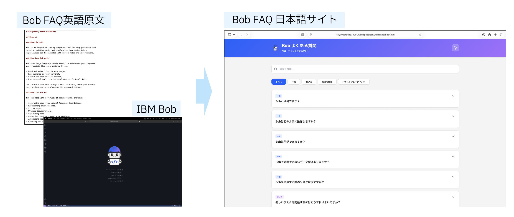

IBM Bob チュートリアル - はじめに
IBM Bobへようこそ！🎉 ここでは、IBM Bobを使って実用的なFAQサイトを一から作成します。プログラミング経験は不要です。自分のペースで進められるので、じっくり学びたい方も、サクッと試したい方も大歓迎です。さあ、一緒に始めましょう！
対象者
- IBM Bobを初めて触る方向け
特におすすめ: - ソフトウェア開発者(初級〜中級) - プロジェクトマネージャー - 開発効率化に関心のあるエンジニア - IBM Bobの導入を検討している方
完成イメージ
本ワークショップでは、FAQサイトを題材として開発プロセスを体験します。

必須環境
ソフトウェア
- IBM Bob: アカウントとインストール済みの環境
- まだお持ちでない方は30日間の無料トライアルから登録
- 登録ガイドはこちらを参照
- VS Code: 推奨エディタ
- Python 3 または Node.js: ローカルサーバー用
- Webブラウザ: Chrome、Firefox、Safari、Edge等
ハードウェア
- PC/Mac/Linux/Windows: 一般的なスペック（メモリ4GB以上推奨）
- インターネット接続: 必須
チュートリアルの構成
- はじめに - IBM Bobチュートリアルの概要
- 準備と設定 - 環境構築
- IBM Bobの画面構成と基本操作 - IBM Bobの基本操作
- LAB1: 初期開発 - FAQサイトの基礎部分を作成
- LAB2: 機能開発 - サイトに追加機能を実装
- LAB3: セキュリティ強化 - コードレビューと品質向上
所要時間
| セクション | 想定時間 |
|---|---|
| 準備と設定 | 5-10分 |
| IBM Bobの画面構成と基本操作 | 5-10分 |
| LAB1: 初期開発 | 15-20分 |
| LAB2: 機能開発 | 10-15分 |
| LAB3: セキュリティ強化 | 10分 |
合計: 約45-65分（最小構成: LAB1のみで約25-40分）
準備ができましたら、次のセクション：準備と設定に進みましょう！
このチュートリアルについて
作成: IBM Bob を使用して作成
更新: 2026年3月
対象バージョン: IBM Bob v2.0以降
ライセンス: © 2026 IBM Corporation. All rights reserved.
Made with IBM Bob 🚀